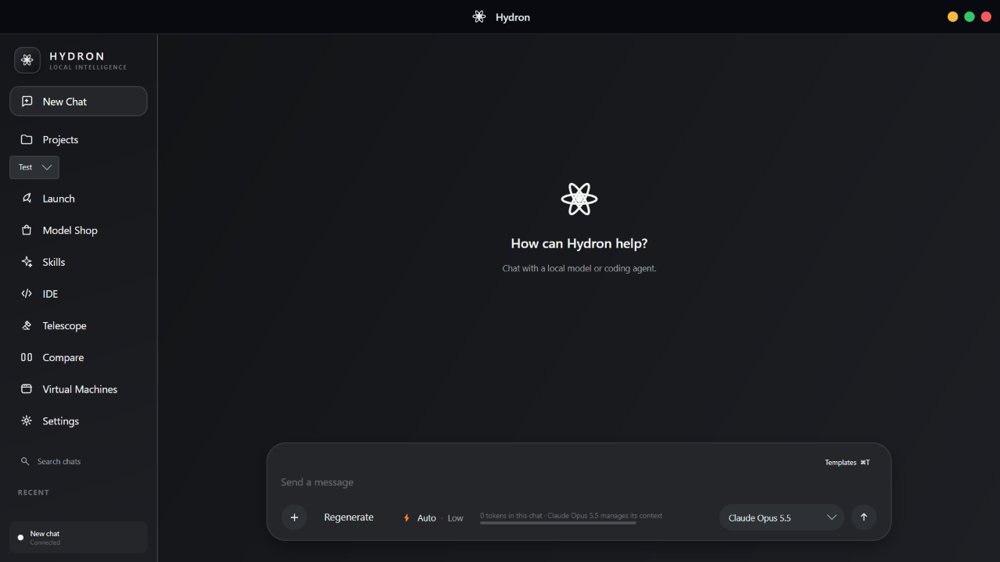
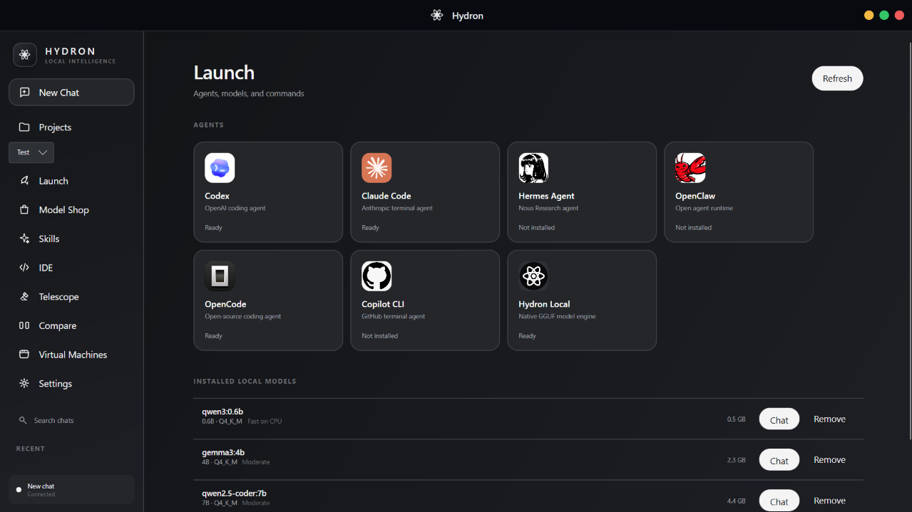
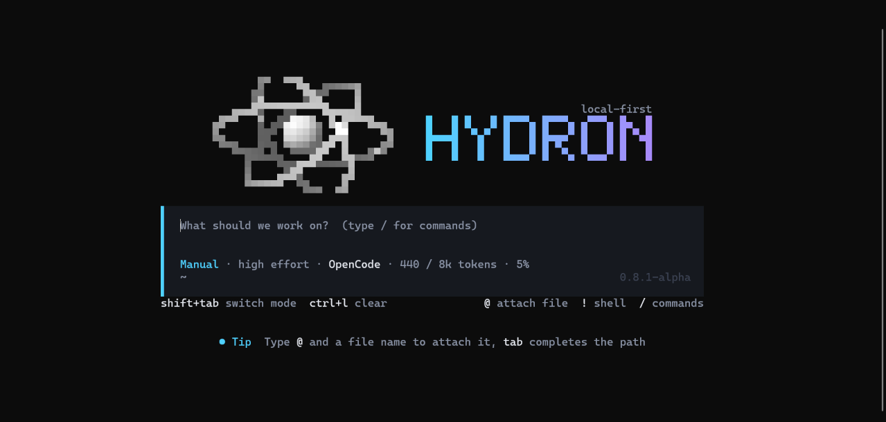
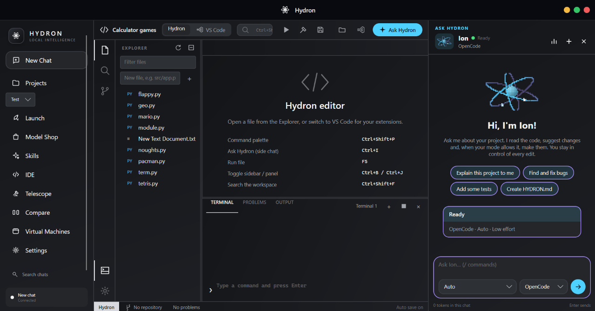

Hydron app
Your home base for local AI. Chat with a model running on your PC or with a connected coding agent, and keep related conversations together in Projects.
Hydron is a desktop workspace for local AI. Run models on your PC, launch the coding agents you already use, and build in one focused app.

Hydron is a local-first AI workspace that brings your models, your coding agents, and your code together on your own machine.
Your home base for local AI. Chat with a model running on your PC or with a connected coding agent, and keep related conversations together in Projects.
See every supported agent on your PC — Codex, Claude Code, Copilot CLI and more — alongside Hydron's own local model engine, and install models from a built-in command console.

Type hydron in any shell for a coding agent on a local model. It starts read-only, attaches files with @, runs commands with !, and /undo reverts any edit.

Open a folder and edit beside your agents. Switch to VS Code when you need your extensions, press Ctrl+I to ask an agent about a file, and run it with F5.

Whether you care most about privacy, already live in a coding agent, or just want to learn, Hydron keeps the models and the code on your machine.
Local model conversations never leave your PC. No account, no telemetry, no Hydron cloud.
How Hydron handles dataLaunch Codex, Claude Code, Copilot CLI and others from one place, with your own subscriptions.
See supported agentsStay in the shell with the Hydron CLI: an agent that starts read-only, with undo built in.
Meet the CLIStart with a small free model on the hardware you have, and grow into bigger ones.
Get startedFree during alpha
Your AI, on your hardware
Included with the app
Hydron in any shell
hydronv0.8.1 alpha · Windows 10 & 11 (x64) · App, CLI, runtime, and local model engine in one installer.